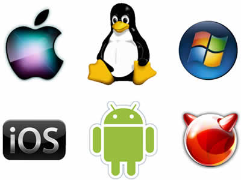
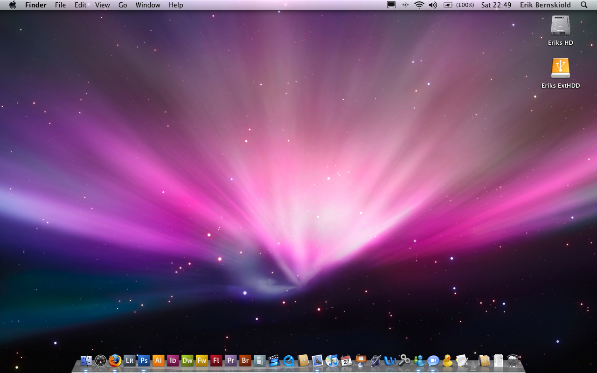
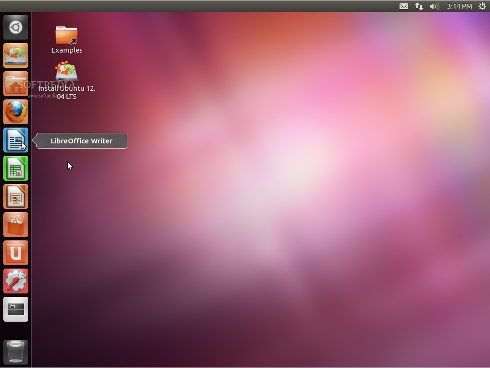
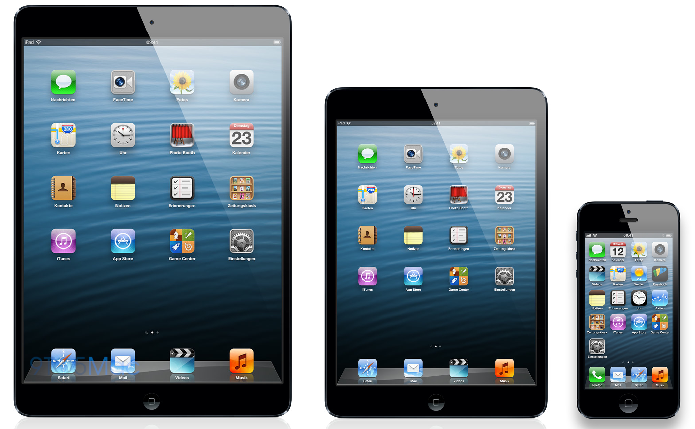
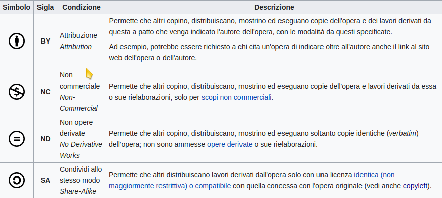
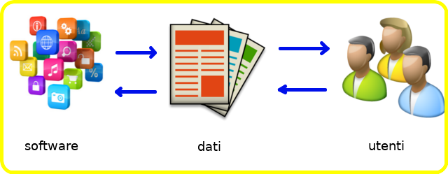

Il software
Software e' un termine generico che definisce programmi e procedure utilizzati per far eseguire ad un dispositivo elettronico un determinato compito. Il termine è un neologismo del ventesimo secolo inventato in contrapposizione al termine "hardware", dunque un componente (-ware) "soft", mordibo, leggero.
I primi "software" possono essere datati 1941, quando il sistema di controspionaggio inglese, capitanato da Alan Turing, lavorava alla decriptazione dei messaggi inviati dall'esercito tedesco con la macchina Enigma. Le istruzioni di decriptazione erano scritti su carta solubile, in modo da poter essere distrutti semplicemente in pochi secondi ("software").
Nel mondo di oggi, una moltitudine di oggetti viene controllata da esso: computer, tablet, smartphones, automobili, TV, lavatrici ed elettrodomestici in genere.
È possibile classificare il software in due grandi macro-aree:
-
software di base, indispensabile al funzionamento del computer. È ciò che fa la differenza fra avere una scatola di ferro e plastica fra le mani e quello che noi chiamiamo "computer". Viene solitamente identificato con il sistema operativo;
-
software applicativo. Comprende i programmi che il programmatore realizza utilizzando le possibilità che il sistema operativo offre. Tutti i programmi che solitamente utilizziamo fanno parte di questa categoria.
I sistemi operativi

I sistemi operativi (spesso abbreviato con OS) sono un insieme di applicazioni di base (vedi sopra) che da un lato si occupano di gestire l'hardware su cui sono installati, dall'altro rendono disponibili ai software applicativi le risorse di cui hanno bisogno per eseguire le proprie operazioni.
I sistemi operativi sono installati su tutti i dispositivi elettronici avanzati (PC desktop, notebook, tablet, smartphones, console per videogiochi, lettore mp3...) e sono dunque grossolanamente classificabili in base al dispositivo a cui sono rivolti.
Vediamo una carrellata dei sistemi operativi più famosi: per piattaforma desktop, troviamo la famiglia di sistemi operativi Microsoft Windows, oppure il sistema operativi Mac OS di Apple e le innumerevoli distribuzioni GNU/Linux.
Per dispositivi mobili, dominano la scena i sistemi operativi Android, della "Open Handset Alliance" capitanata da Google e iOS di Apple.
Domanda
Quanti sistemi operativi conosci? Quanti ne esisteranno secondo te? Proviamo a cercare su Internet informazioni sui sistemi operativi. Ci interessa sapere:
- il loro nome
- che simbolo hanno
- se sono per desktop, mobile o dispositivi particolari
- vedere uno screenshot di come sono fatti
Proviamo a fare una piccola ricerca su Internet e a riempire un foglio di Libreoffice Writer con queste informazioni. Dieci minuti di tempo...
Vediamo qui di seguito una carrellata dei sistemi operativi più conosciuti, almeno ad oggi (Settembre 2017).
Windows 10

Windows 10 è il decimo OS prodotto da Microsoft e a sentire le loro dichiarazioni, doveva anche essere l'ultimo...
Nella strategia di Microsoft, questo doveva essere il sistema operativo in cui far convergere tutti i dispositivi: desktop, tablet, smartphone, console.
Invece...
Mac OS

MacOS è il nome dato al sistema operativo desktop prodotto da Apple.
Sebbene Apple sia una delle aziende pioniere della storia dell'informatica, questo OS è stato riscritto da zero solo nel 2001, abbracciando una derivata UNIX-like della famiglia BSD e mantenendo l'aspetto grafico originario.
Una delle caratteristiche principali di macOS è che è progettato specificatamente per l'hardware dei (pochi) dispositivi che Apple produce.
Distribuzioni GNU/Linux

Una distribuzione Linux è una raccolta di software tipicamente libero e opensource basata sul kernel GNU/Linux e l'X Window System.
In generale una distribuzione Linux rappresenta un sistema operativo UNIX-like, formato tramite la raccolta e la libera distribuzione di software libero selezionato.
Ma chi fa questa selezione? Chi distribuisce questa raccolta di software?
Esistono tipicamente due categorie di distribuzioni: quelle implementate da aziende, quali Red Hat, Novell, Mandriva, Canonical... che realizzano la loro distribuzione per uno scopo ben preciso oppure quelle divulgate da comunità libere di hobbisti, quali Debian, Slackware, Gentoo, etc...
Sistemi BSD
I sistemi operativi della Berkeley Software Distribution sono una variante originale del sistema UNIX sviluppata (indovina un po'...) presso l'università di Berkeley della California.
Il sistema operativo BSD non è più utilizzato e sviluppato, ma da esso è partita una famiglia di sistemi operativi liberi molto diffusi, soprattutto in ambito mainframe e network management, fra cui vale la pena ricordare:
- FreeBSD, su cui si basa il firewall/proxy del liceo
- FreeNAS, utilizzato su dispositivi di archiviazione di rete
- DarwinOS, sistema libero sovvenzionato da Apple, su cui si basa Mac OS
- Orbis OS, il sistema operativo della PlayStation
Valeva la pena citarli, vero??
PS: L'ho detto che anche il servizio Netflix si basa su FreeBSD? E che anche i server Whatsapp lo stesso?
Android
Android è un sistema operativo per dispositivi mobili derivato da Linux (praticamente è come un'altra distribuzione Linux) e sviluppato principalmente da Google e da tutta la Open Handset Alliance.
Originariamente progettato per smartphone e tablet, possiede interfacce utente specializzate per vari devices quali automobili (Google Auto), occhiali (Google Glass), orologi da polso (Android Wear) e TV (Android TV).
Ad oggi (Settembre 2017) Android è il sistema operativo mobile più diffuso al mondo con oltre il 60% del mercato.
iOS

iOS è un sistema operativo sviluppato da Apple per i dispositivi che lei stessa produce: iphone, ipad, ipod.
Come macOS, è un sistema operativo derivato da DarwinOS, ma ridisegnato per adeguarlo ai particolari dispositivi che andrà a gestire.
Questa caratterizzazione, soprattutto nelle librerie grafiche, rende le applicazioni per i due OS prodotti da Apple incompatibili fra di loro.
A settembre 2017 iOS ha superato il 30% di presenza nel mercato mobile mondiale.
Lavoro di gruppo sui Sistemi Operativi
Il prof ha una proposta per voi...
Compiti di un OS
Un sistema operativo è un insieme di software di base che realizza i compiti di gestione del dispositivo e dell'interfacciamento utente.
In particolare esso si occupa:
- della gestione dell'hardware di cui è composto il dispositivo;
- dell'esecuzione dei programmi, con particolare attenzione alla distribuzione delle risorse (CPU e memoria di base) ai processi che ne richiedono l'utilizzo;
- alla gestione dell'interfaccia utente, in modo che quest'ultimo possa impartire al sistema i suoi comandi e visualizzare ciò che ne consegue;
- alla gestione del file system, tramite il quale i dati possono essere memorizzati e acceduti dal sistema.
Mi rendo conto che questa descrizione è un po' stringata e "criptica". Provo a spiegare quali sono i compiti principali di un OS, partendo dalle parole chiave che trovate sottolineate nel testo.
Hardware
Se siete arrivati a leggere fino a qua, cosa è l'hardware dovreste già saperlo... passiamo veloci alla prossima definizione.
Programmi e Processi
Programma è sinonimo di software, ovvero un file memorizzato nel filesystem che è eseguibile direttamente dal sistema operativo. Per questo motivo i programmi vengono detti anche "eseguibili" e su Windows sono i file con estensione ".exe".
I processi sono i programmi attualmente in esecuzione. Proviamo a spiegare la differenza con un esempio: sul mio computer ho installato una copia di MS Word, che è ovviamente un programma. Se clicco su 2 file .doc e si aprono 2 finestre di Word per visualizzare e modificare questi file, avrò in esecuzione 2 processi dello stesso programma. Il programma è uno (MS Word), ma i processi per questo esempio sono 2. Ovviamente le risorse (CPU e memoria di base) vanno ai processi, NON ai programmi!
Risorse
Una risorsa è un componente fisico o virtuale che offre una determinata
funzionalità e di cui si ha una disponibilità limitata.
Nei nostri esempi, le risorse sono le memorie di base, che purtroppo
sono sempre limitate e la CPU che è tipicamente una!!!
Le risorse vanno distribuite fra tutti i processi che le richiedono: più
OS realizza bene questo compito e più il sistema appare "scattante" e
"responsivo". Chiaro?
File system
Un file system è un meccanismo di organizzazione dei dati che costituiscono i file all'interno dei dispositivi di archiviazione (le memorie di massa). Tramite il filesystem diventano possibili tutte le operazioni sui file, quali lettura, scrittura, modifica, organizzazione gerarchica, navigazione e accesso.
Capite bene che un sistema operativo che non gestisca un filesystem è incredibilmente limitato nelle sue funzionalità.
Spiegati i termini, spero sia più facile capire quelli che sono i compiti di base di un OS. Allora vi chiedo... tornate su e rileggeteli!!!
Poi andiamo avanti.
Licenze Software
In ambito informatico, una licenza è il contratto tramite il quale chi produce il software determina le condizioni di distribuzione e di utilizzo dello stesso per coloro che vogliono servirsene.
Ogni software ha sempre una propria licenza e quindi per ogni software che si utilizza sul PC, sullo smartphone, sul tablet o in rete bisognerebbe conoscere sempre le limitazioni che il produttore del software, il quale agli occhi della legge rimane l'unico proprietario, impone.
Esistono varie tipologie di licenze software, classificabili genericamente nelle due macro-categorie:
- licenze per il software proprietario
- licenze per il software libero
Licenze per il software proprietario
Viene definito "proprietario" il software prodotto da aziende per (evidenti) motivi di lucro. Tipicamente (ma non sempre) questa tipologia di software coincide con il software "closed source", ovvero quello per cui il codice sorgente non viene rilasciato al pubblico e quindi se ne rende impossibile ogni tipo di studio, modifica o ridistribuzione.
Le licenze disponibili in questa categorie sono solitamente di 3 tipi:
EULA
L'End User License Agreement è un contratto che descrive in quale modo il produttore mantenga i "diritti" sul software che ha creato e non lo "venda" all'utente finale, ma che gli permetta di utilizzarlo. La non accettazione implica l'impossibilità per quest'ultimo perfino di installare il programma.
Freeware
Le licenze di questo tipo concedono gratuitamente l'utilizzo e la ridistribuzione del software all'utente finale. Le aziende che scelgono questo tipo di licenza lo fanno chiaramente per favorire la distribuzione di massa del software stesso e rientrano degli utili chiedendo delle donazioni agli utenti che hanno apprezzato il software o utilizzandolo come veicolo pubblicitario per terze parti (ad-ware).
Shareware
Le licenze di questo tipo permettono all'utente finale di scaricare semplicemente e gratuitamente una versione di prova o con funzionalità limitate del software (trial), chiedendo dopo poco tempo il pagamento di una somma (riscatto) per continuare ad usufruire dello stesso.
Licenze per il software libero
Viene definito "libero" quel software pubblicato tramite una licenza che ne permetta l'utilizzo, l'analisi del codice, la modifica e la redistribuzione (anche modificato, evidenziando le proprie modifiche).
Si intende chiaramente che software libero implichi software "open source", ovvero quel tipo di software che oltre all'eseguibile, ovvero il programma da installare e utilizzare, distribuisce anche i codici sorgenti che compilati generano quel programma.
Il software libero è più di ogni altra cosa una filosofia di vita, che secondo me i vostri figli se faranno il liceo si ritroveranno tra gli argomenti di filosofia dell'ultimo anno... per quanto vi riguarda, se l'argomento vi interessa, vi suggerisco due letture brevi sull'argomento tratte da Wikipedia:
Per quanto riguarda le licenze più comuni di software libero esse sono:
GPL
La General Public License è la licenza di base del software libero, scritta dalla Free Software Foundation e si basa sulle cosiddette "4 libertà fondamentali del software":
- Libertà 0: Libertà di eseguire il programma per qualunque scopo
- Libertà 1: Libertà di studiare il codice del programma e modificarlo
- Libertà 2: Libertà di redistribuire copie del software a chiunque
- Libertà 3: Libertà di migliorare il programma e di distribuirne pubblicamente i miglioramenti
Licenze BSD
Le licenze BSD riflettono al meglio il concetto di free in quanto gratuito. Esse garantiscono che il codice rilasciato con questa licenza sia attribuito al suo autore e possa essere studiato, ridistribuito e modificato, ma non obbligano nessuno a ridistribuire pubblicamente le modifiche che si fanno ad esso.
In questo modo gli autori intendono considerare il codice rilasciato con licenza BSD come un dono che l'autore fa al mondo, senza richiede nulla in cambio anche se qualcuno utilizza il suo codice per scopi di lucro.
I sistemi operativi della famiglia BSD sono tutti basati su questa licenza. I sistemi operativi di Apple sono tutti basati su BSD grazie a questa particolare licenza con cui essi (i sistemi BSD) sono rilasciati.
Le aziende e il software opensource
Molto del software che utilizziamo quotidianamente (ad esempio, la PlayStation,
Whatsapp, Netflix) sono basati su BSD.
Infatti, la licenza BSD permette a chiunque di costruire il proprio servizio a pagamento
sopra un sistema operativo BSD senza dover condividere pubblicamente il proprio codice
come sarebbe stato obbligatorio in caso di progetto derivato da uno con licenza GPL.
Creative Commons
Le CC sono licenze di diritto d'autore (quindi applicabili ad ogni opera dell'ingegno) organizzate secondo una schema di concessione in cui l'autore decide quale libertà concedere a chi vuole usufruire dell'opera.
L'unica libertà "obbligatoria" da concedere è il diritto di copiare e distribuzione l'opera (share), mentre l'unico diritto obbligatorio che si ottiene con questa licenza è l'attribuzione all'autore.
Le altre possibilità sono regolate secondo il seguente schema (copiato da Wikipedia)

Combinando opportunamente alcune di queste clausole si ottengono le licenze CC. Date un occhio al fondo pagina delle dispense del prof per vederne un esempio...
Software applicativi
I software applicativi sono quei software utilizzati per specifiche operazioni, quali la scrittura di un documento, un calcolo, un disegno, la navigazione su internet, la visione di un contenuto audio o video, ecc.
Ognuno di questi software dunque può essere catalogato per il tipo di funzione che svolge. Per svolgere la loro funzione inoltre, i software hanno bisogno di interagire con i dati che gli utenti alla fine vogliono visualizzare. Altrimenti perché usare quel software?

Cerchiamo allora di dare una prima categorizzazione al software, ponendo attenzione anche al formato di dati che esso è in grado di trattare.
Lavoro di gruppo sul Software
Ne arriva un'altra...